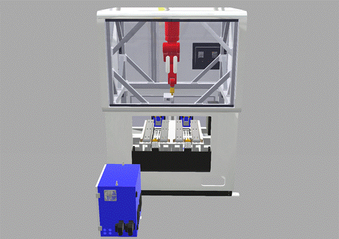
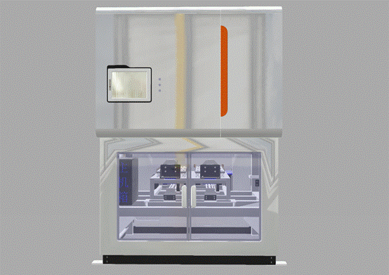
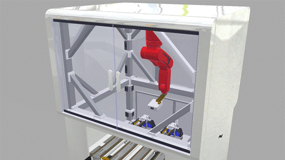

项目介绍：
机器人3D扫描系统使用六轴关节工业机器人以倒装方式夹持3D扫描相机，扫描精度高、扫描范围大、扫描速度快，自主开发的3D相机采用500万像素高分辨率传感器、可调焦红色激光，扫描距离达200mm，可实现360度全方位扫描，并实时三维重建，在三维检测、三维重建、三维特征提取、空间定位等领域具有广阔应用前景。
应用特点：
扫描精度高、扫描范围大、扫描速度快，高分辨、360度全方位扫描，并实时三维重建。提供二次开发包方便集成于其他系统。
应用领域：
三维检测、三维重建、三维特征提取、空间定位等。


